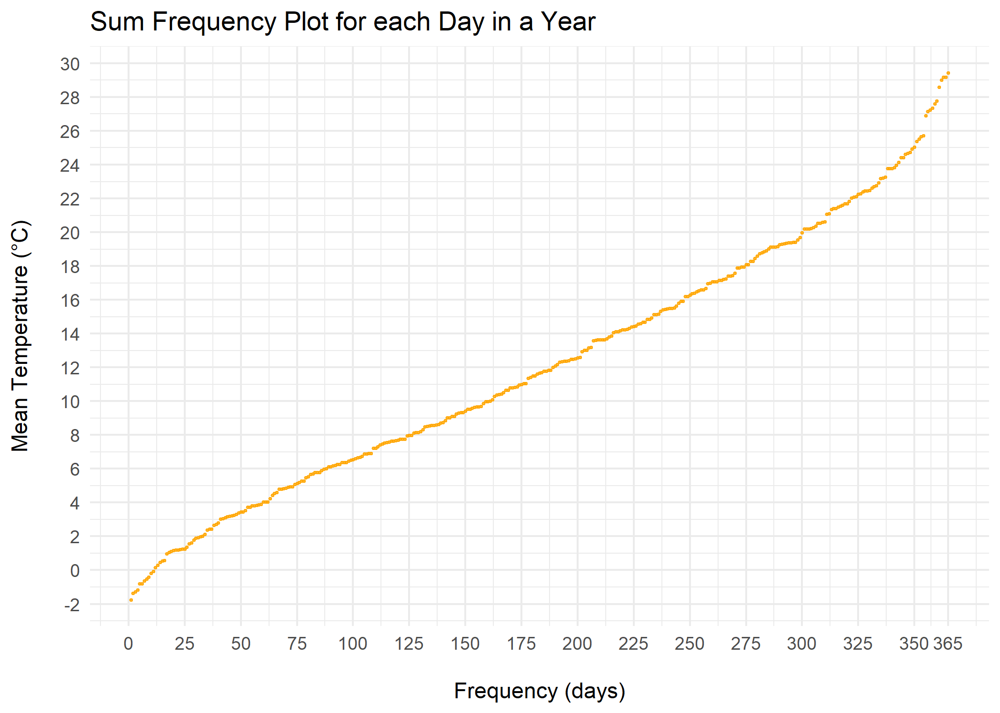
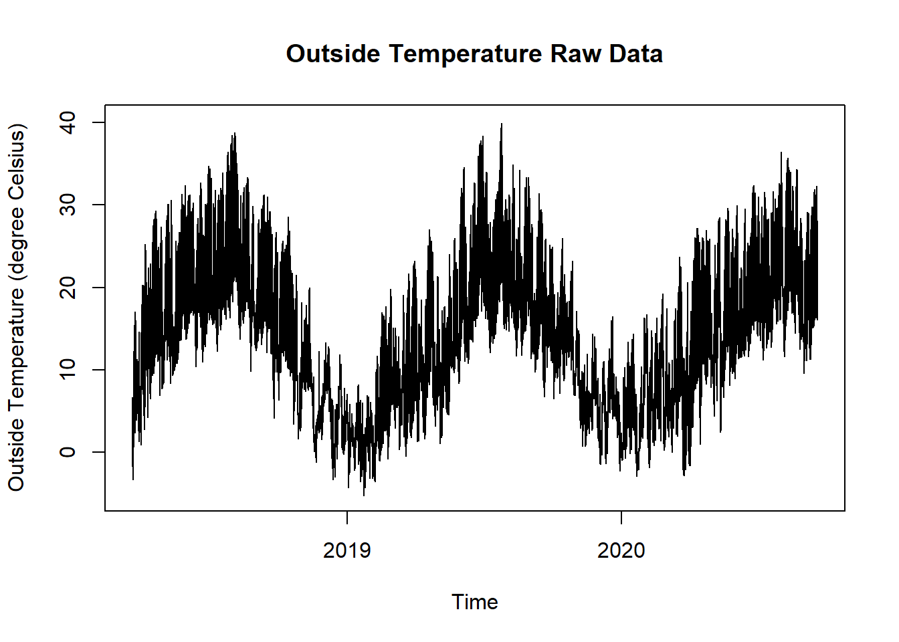

13.4 Sum Frequency Days
13.4.1 Goal
You want to create a sum frequency plot of a temperature series for each day in a year:

Figure 13.7: Sum Frequency Plot Temperature Days
13.4.2 Data Basis

Figure 13.8: Outside Temperature Raw Data for Sum Frequency Days Plot
13.4.3 Solution
Create a new script, copy/paste the following code and run it:
library(ggplot2)
library(plotly)
library(dplyr)
library(lubridate)
library(zoo)
library(mgcv)
# load time series data and aggregate daily mean values
df <- read.csv("https://github.com/hslu-ige-laes/edar/raw/master/sampleData/centralOutsideTemp.csv",
stringsAsFactors=FALSE,
sep =";")
df$time <- parse_date_time(df$time,
order = "YmdHMS",
tz = "Europe/Zurich")
# rename columns
colnames(df) <- c("time", "value")
df$day <- as.Date(cut(df$time, breaks = "day"))
df$year <- year(df$time)
# filter year
# edit year!!!
filterYear <- "2019"
df <- filter(df, year == filterYear)
df <- df %>%
group_by(day) %>%
summarise(meanValue = mean(value, na.rm = TRUE)) %>%
ungroup()
# Fill missing values with NA
grid.df <- data.frame(day = seq(as.Date(paste0(filterYear, "-01-01")),
as.Date(paste0(filterYear, "-12-31")),
by = "days"))
df <- merge(df, grid.df, all = TRUE)
# replace NA with interpolation
df$meanValue <- na.approx(df$meanValue)
tempMin <- floor(min(df$meanValue, na.rm = TRUE))
tempMax <- ceiling(max(df$meanValue, na.rm = TRUE))
# create new data frame with sorted values
data <- data.frame(sort(df$meanValue))
data$day <- as.numeric(row.names(data))
colnames(data) <- c("meanValue", "day")
# static chart with ggplot
plot <- ggplot2::ggplot(data) +
ggplot2::geom_point(aes(x = day,
y = meanValue),
colour = "orange",
alpha = 0.8,
size = 0.5
) +
ggtitle("Sum Frequency Plot for each Day in a Year") +
ylab("Mean Temperature (\u00B0C)\n") +
xlab("\nFrequency (days)") +
theme_minimal() +
scale_x_continuous(breaks = append(seq(0, 365, 25), 365)) +
scale_y_continuous(breaks = seq(tempMin, tempMax, 2))
# interactive chart
plotly::ggplotly(plot)